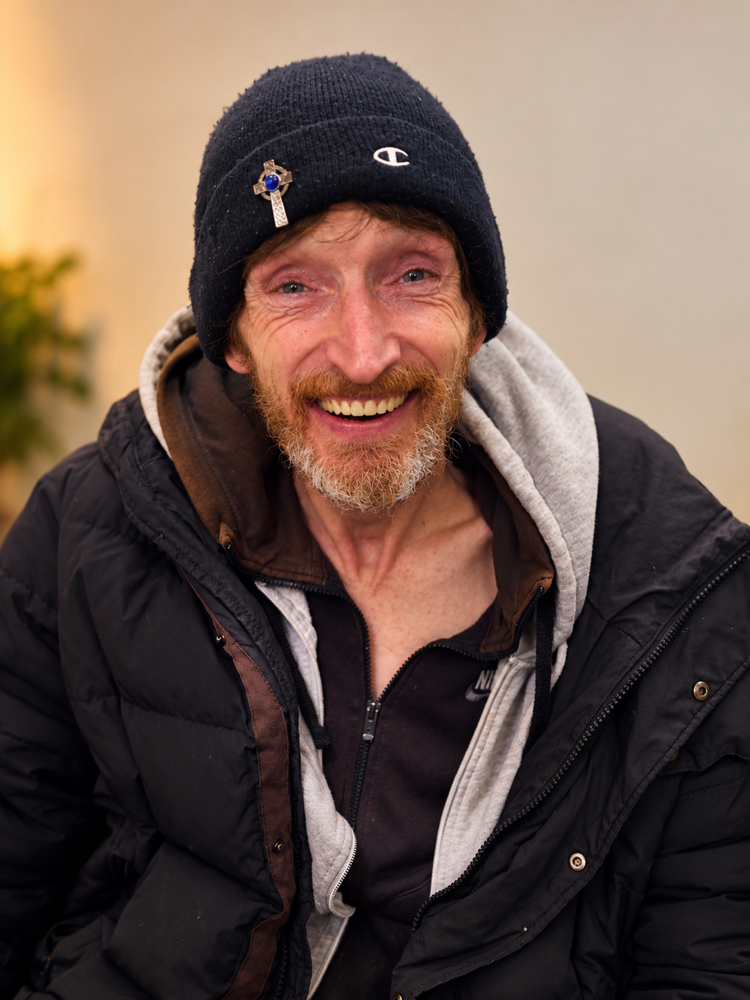
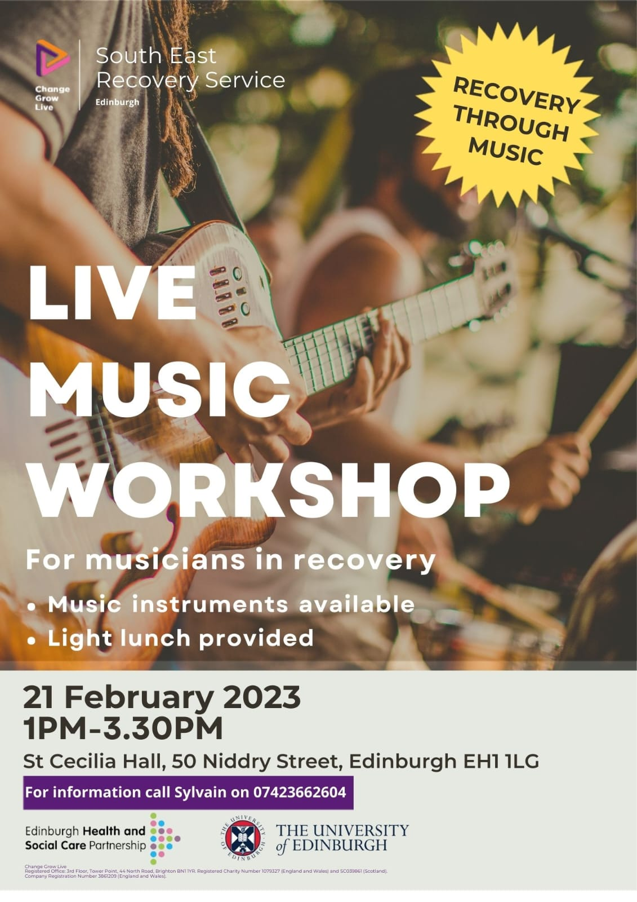
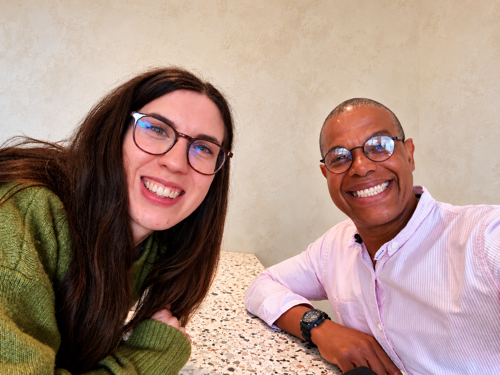

ABOUT RECOVERY THROUGH MUSIC
There is always more to the person.

Difficult experiences can change how a person is seen — by others and, over time, sometimes by themselves.
But the person is still there.
Their humour. Their imagination. Their relationships. Their creativity. Their capacity to contribute. Parts of themselves that addiction, trauma, isolation or other difficult experiences may have pushed into the background.
Recovery Through Music begins with a curiosity about what might help bring those parts of a person forward again.
RTM is an Edinburgh-based community music and wellbeing organisation, developed by founder Sylvain H. Ayité from his experience as a counsellor and recovery practitioner, and as a musician, singer-songwriter and bandleader.
We bring people together to make music within a reflective and supportive creative community. People play, sing, create, improvise, record, listen and reflect together. Musical experience is not required. What matters is having somewhere to participate, connect and contribute.
At the heart of the work is a simple conviction:
See the person before the problem.
Because at RTM, music is not the destination.
It is the meeting place.
WHERE IT BEGAN

For many years, music and my work with people affected by addiction existed alongside each other in my life.
As a counsellor and recovery practitioner, I became increasingly curious about what recovery might mean beyond addressing a problem — what helps someone reconnect with themselves, contribute and experience a sense of possibility?
As a musician, I have never thought music has to resemble what we hear in the charts, or conform to somebody else's idea of what good music should be. For me, it can be much more personal and authentic — a way to express, experiment and discover what can emerge when people create together.
In February 2023, those two parts of my life came together. Recovery Through Music began as a weekly gathering in Edinburgh with a simple invitation: come into the room, take part in whatever way you can, and let's see what we can make together.
FROM ONE ROOM
What began as a weekly gathering gradually became a community.
People returned. New people arrived. They brought songs, stories, humour, difficult days and their own ways of contributing. Some came with musical experience; others picked up an instrument for the first time. Together, they began to shape what RTM became.
The weekly community remains at the heart of RTM, but the approach has also travelled. RTM has worked in HMP Edinburgh and HMP Perth, and principles developed through the project have informed work with asylum seekers and refugees.
The settings may be different, but the invitation remains much the same: participate, create, connect and contribute.
THE PEOPLE BEHIND RTM
Recovery Through Music is led by Sylvain H. Ayité and Laura Beattie, bringing together experience in music, counselling, recovery, community engagement and widening participation.

Sylvain H. Ayité — Founder
Sylvain is a musician, singer-songwriter, counsellor and community wellbeing practitioner with over twenty years of experience in the mental health and wellbeing field. RTM grew from bringing together two important parts of his life: his experience of music as something personal and expressive, and many years of working alongside people affected by addiction and other difficult life experiences.
Laura Beattie — Co-Director
Laura works in community engagement and widening participation, with experience of using arts, culture and heritage to create positive social impact. Her work has included programmes with young people from widening participation backgrounds, learning programmes in prisons, and supporting people who face barriers to employment.
She brings to RTM a strong understanding of how creative spaces can become more accessible to people who may otherwise experience barriers to taking part.